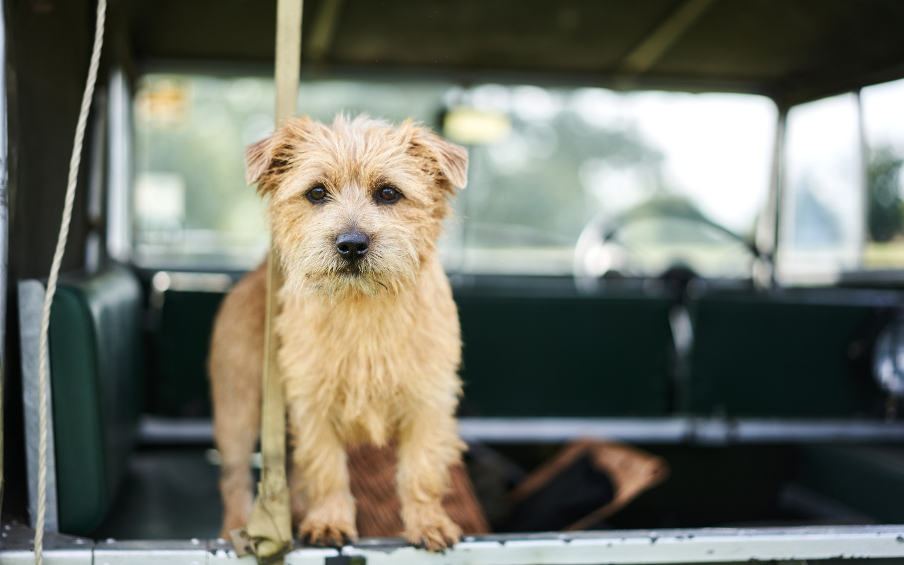

Puppy
The domestic dog (Canis lupus familiaris when considered a subspecies of the wolf or Canis familiaris when considered a distinct species)[5] is a member of the genus Canis (canines), which forms part of the wolf-like canids,[6] and is the most widely abundant terrestrial carnivore.[7][8][9][10][11] The dog and the extant gray wolf are sister taxa[12][13][14] as modern wolves are not closely related to the wolves that were first domesticated,[13][14] which implies that the direct ancestor of the dog is extinct.[15] The dog was the first species to be domesticated[14][16] and has been selectively bred over millennia for various behaviors, sensory capabilities, and physical attributes.[17]